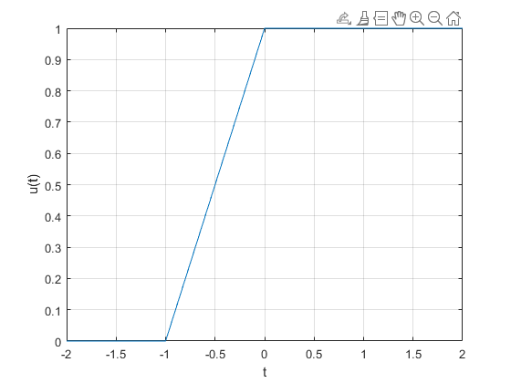
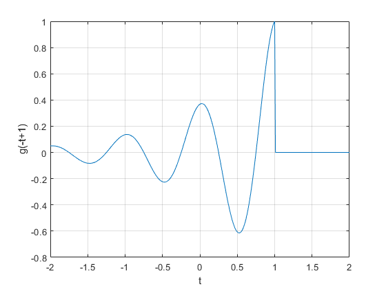
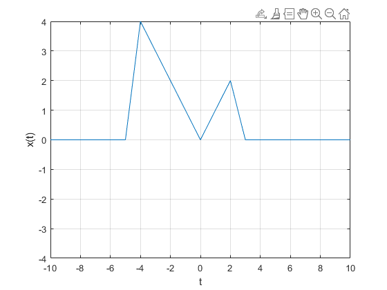

P01: Señales en tiempo continuo.
Contents
1. Seccion 1.11 del Lathi.
1.11-1: Funciones anónimas.
Representar la señal f(t)=e^(-t)cos(2πt) en un intervalo entre -2 y 2.
f = @(t) exp(-t).*cos(2*pi*t); t=0; f(t)
ans =
1
f(0)
ans =
1
t=(-2:2); f(t)
ans =
7.3891 2.7183 1.0000 0.3679 0.1353
plot(t,f(t)); xlabel('t'); ylabel('f(t)'); grid;
Ahora modificaremos el avance para hacer a la grafica mas detallada de 1 a 0.01 de avance.
t=(-2:0.01:2); plot(t,f(t)); xlabel('t'); ylabel('f(t)'); grid;
1.11-2: Operadores relacionales y la funcion paso unitario.
Tenemos seis operadores relacionales: <, >, <=, >=, ==, y ~=. Primero usamos el >= operador relacional para graficar entre -2 y 2.
u= @(t) 1.0.*(t>=0);
t=(-2:2);plot(t,u(t)); xlabel('t'); ylabel('u(t)');grid;
Ahora modificaremos el avance para hacer a la grafica mas detallada de 1 a 0.01 de avance.
t = (-2:0.01:2); plot(t,u(t)); xlabel('t'); ylabel('u(t)'); axis([-2 2 -0.1 1.1]);
%Ahora le hacemos un corte cuando la grafica cuando t-1.
p = @(t) 1.0.*((t>=0)&(t<1));
t = (-1:0.01:2); plot(t,p(t)); xlabel('t'); ylabel('p(t) = u(t)-u(t-1)'); axis([-1 2 -.1 1.1]);
1.11-3: Visualizando
g(t) = f(t)u(t) = e−t cos(2πt)u(t) y para graficar g(t) multiplicamos las funciones anonimas f(t) y U(t) entre -2 y 2 con un paso de .01.
g = @(t) f(t).*u(t); t = (-2:0.01:2); plot(t,g(2*t+1)); xlabel('t'); ylabel('g(2t+1)'); grid;
Ahora en vez de que g(t)=(2t+1) haremos que sea (-t+1) entre -2 y 2.
plot(t,g(-t+1)); xlabel('t'); ylabel('g(-t+1)'); grid;
Por ultimo hacemos que se sumen las dos funciones anteriores
%g(t)=(2t+1)+(-t+1).
plot(t,g(2*t+1)+g(-t+1)); xlabel('t'); ylabel('h(t)'); grid;
1.11-4: Integracion numerica y Estimacion de la energia de la señal.
Aqui debemos sacar la energia de la señal x(t) = e−t(u(t)−u(t−1)).
x = @(t) exp(-t).*((t>=0)&(t<1));
t = (0:0.01:1); E_x = sum(x(t).*x(t)*0.01)
E_x =
0.4367
Ahora tomaremos en cuenta el error relativo de la señal.
x_squared = @(t) x(t).*x(t); E_x = quad(x_squared,0,1)
E_x =
0.4323
En este caso es de -.0026%
Eg = integrar (e−2t cos2 (2πt)dt) entre infinito y 0 para dar una respuesta mas rapido.
g_squared = @(t) g(t).*g(t); t = (0:0.001:100); E_g = sum(g_squared(t)*0.001)
E_g =
0.2567
E_g = quad(g_squared,0,100)
E_g =
0.2562
2. Solucion del 1.2-2.
1.2-2. Para la señal x(t) dada por la Fig. P1.2-2,s
(a) x(t−4)
(b) x(t/1.5)
(c) x(−t)
(d) x(2t−4)
(e) x(2−t)
x = @(t) t.*((t>=0)&(t<=2))+(-t).*((t>=-4)&(t<0));
t=(-10:10);plot(t,x(t)); grid;
xlabel('t'); ylabel('x(t)');
axis([-10 10 -4 4]);
 %a)
plot(t,x(t-4)); grid;
xlabel('t'); ylabel('x(t-4)');
axis([-10 10 -4 4]);
%b)
plot(t,x(t/(1.5))); grid;
xlabel('t'); ylabel('x(t/1.5)');
axis([-10 10 -4 4]);
%c)
plot(t,x(-t)); grid;
xlabel('t'); ylabel('x(-t)');
axis([-10 10 -4 4]);
%d)
plot(t,x(2*t-4)); grid;
xlabel('t'); ylabel('x(2*t-4)');
axis([-10 10 -4 4]);
%e)
plot(t,x(2-t)); grid;
xlabel('x'); ylabel('x(2-t)');
axis([-10 10 -4 4]);